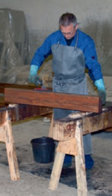
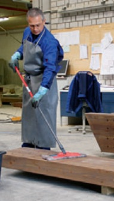

Technische Schutzmaßnahmen
Werden lösemittelhaltige Holzschutzmittel in Räumen verarbeitet, ist für gute Lüftung zu sorgen.
Maßnahmen zum Brand- und Explosionsschutz siehe hier.
Chromathaltige Holzschutzmittel und Steinkohlenteerölpräparate dürfen im Streichverfahren nicht verarbeitet werden.
Bei allen für die vorbeugende Behandlung von tragenden und aussteifenden Holzbauteilen zugelassenen Holzschutzmitteln ist das Spritzen von Hand nicht mehr zulässig.
Persönliche Schutzausrüstungen
| Holzschutzmittel | Schutzhandschuhe | Augenschutz | Atemschutz | Schutzkleidung |
| Wässrige Holzschutzmittel mit Bor- oder Kupfer-salzen, Quats oder Cu-HDO |
|
Bei Spritzgefahr: Gestellbrille |
Im Allgemeinen nicht erforderlich | Im Allgemeinen nicht erforderlich; Arbeitskleidung |
| Wässrige Holzschutzmittel mit organischen Wirkstoffen |
|
Bei Spritzgefahr: Gestellbrille |
Im Allgemeinen nicht erforderlich | Im Allgemeinen nicht erforderlich; Arbeitskleidung |
| Lösemittelhaltige Holzschutzmittel mit organischen Wirkstoffen |
|
Bei Spritzgefahr: Gestellbrille |
Bei großflächiger Anwendung und/oder schlechten Lüftungsverhältnissen erforderlich: A1 oder A2 (braun) |
Im Allgemeinen nicht erforderlich; Arbeitskleidung |
Die Handschuh-Datenbank von GISBAU (www.gisbau.de) enthält Schutzhandschuh-Empfehlungen von verschiedenen Handschuh-Herstellern für die Holzschutzmittel-Produktgruppen.
Es werden Handschuhfabrikate mit Tragedauern für den Spritzkontakt (z.B. Streichen) und den Dauerkontakt (z.B. Spritzen) angegeben.
Auf unbedeckte Körperteile sollten Hautschutzmittel aufgetragen werden.
Nach der Arbeit und vor längeren Arbeitspausen sollten die Hände gereinigt und Hautpflegemittel aufgetragen werden.